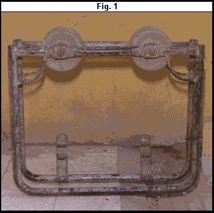
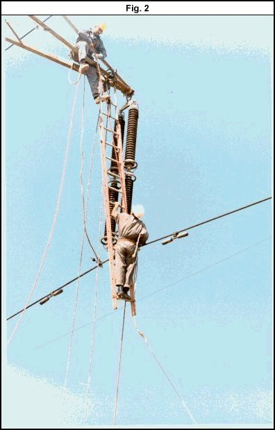
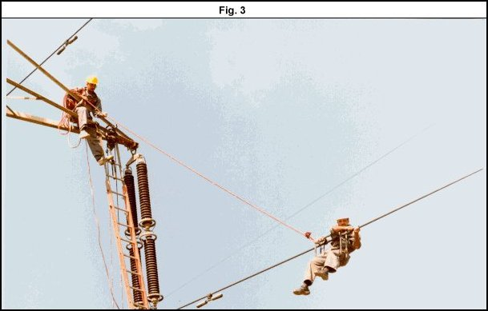

| Transmission Lines |
Technical Procedure |
Equipment:
Using Trolley Cart on Single Conductor
Routine Inspection
|
|
|
|||
|
Equipment: |
Document No.: TL-025-r0 | |||
| Issued
to: | ||||
| Status: | ||||
|
Procedure: Routine Inspection |
Approved Date: 15 February 1999 | |||
| Date to be Reviewed: Feb 2004 | ||||
Introduction
This procedure outline the steps required to use trolley on single conductor over head transmission line to do some maintenance on the conductor such as repairing the vibration damper or any maintenance required to be done on the conductor.
Safety Precautions
Obtain an authorized work permit
Always use approved fall arrest equipment and procedures.
Always use approved temporary earthing equipment and procedures
Use personal protective equipment.
Maintain limits of approach from all circuits that have not been de-energized
Ensure that the insulators, hardware and conductor in the span to be worked on are in satisfactory mechanical condition to safely support the extra weight of the conductor trolley and line man.
Inspect the cart and correct any defects.
Tools and Equipment
Complete set of earthing equipment.
Hand line.
Complete set of fall protection equipment including retractable life – line.
Rope ladder, Single conductor trolley.
Pulling rope about 20-30 meter (L.L.RO)
Work to be Carried Out
The line must be isolated according to EEA Safety Rules.
Temporary earthing cables must be installed on both sides of the work area.
Check the wheels of the trolley before raising it to ensure that they are secure and spin freely.
Check the hand line, the ladder ,the trolley and all equipment required for work. See Fig (1).
Visually check the insulators at the work location from the ground.
Two line men must climb the two towers on each side of the span and install a hand line on the tower cross arm above the work level to make it easy to install the equipment on the conductor.
Raise the ladder and install it on the cross arm above the work area where the trolley will be installed. See Fig (2).
Raise the trolley to the level of the phase on which the work will be done.
One lineman has to stand at the end of the cross arm to assist the other lineman on the ladder to install the trolley on the conductor.
Raise the pulling rope to the lineman on the rope ladder. Attach it to one end of the trolley while the other end remains on the cross arm (or on the ground).
The line man on the rope ladder moves to the trolley while remaining attached to his fall arrest system that is attached to the tower.
The lineman then attaches his belt to the trolley and then releases his safety rope from the tower. See Fig (3).
The lineman is now ready to move the trolley on the conductor using the pulling rope to complete the required work.
When the lineman finished the work the trolley is moved to a position near to the hand line, below the tower arm.
The lineman connects his belt to the fall arrest system attached to the tower and transfers his position from the trolley to the rope ladder.
Attach the trolley to the handline, remove it from the conductor and lower it to the ground.
Remove the earthing cables from the conductors and lower all equipment to the ground.
Complete the work permit.
Inform the control that the circuit is ready to be put back in service.


